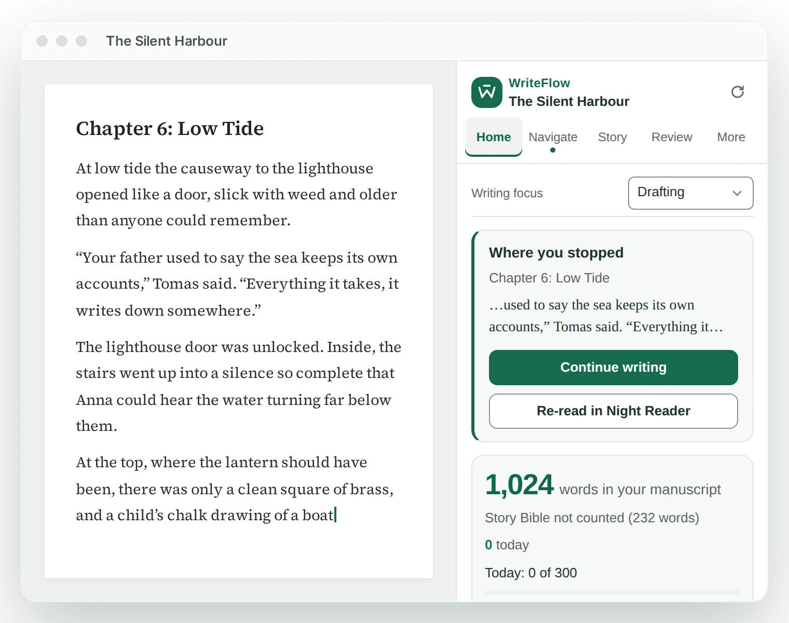
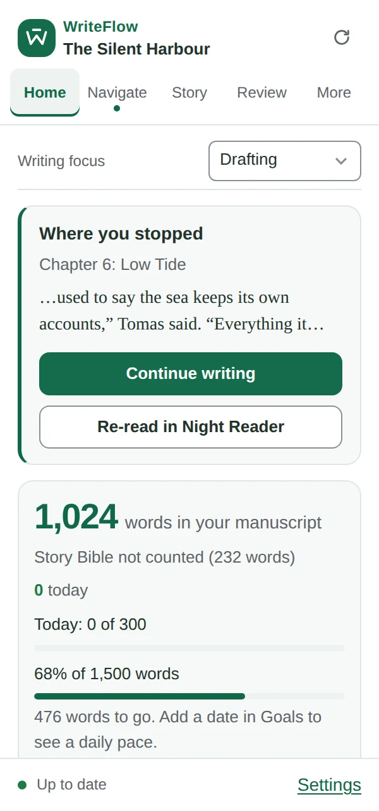
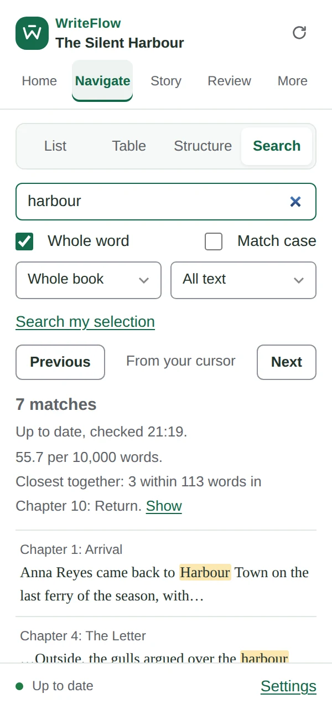
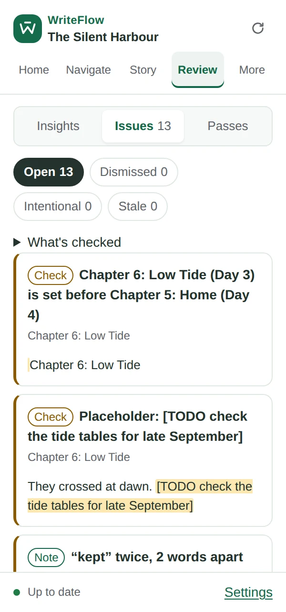
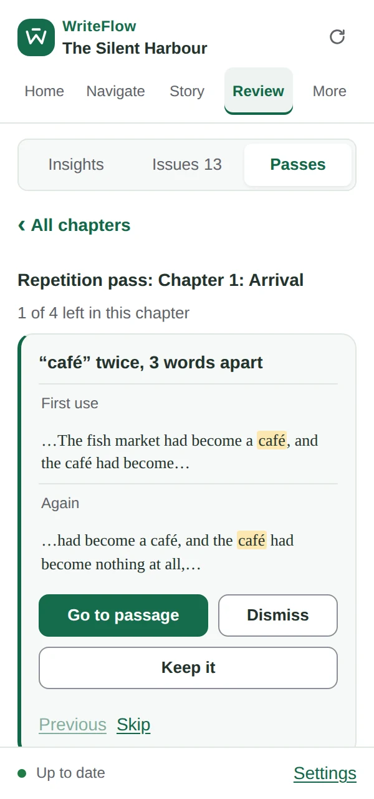
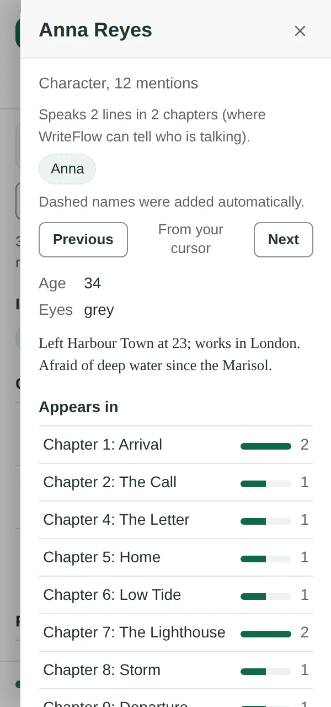
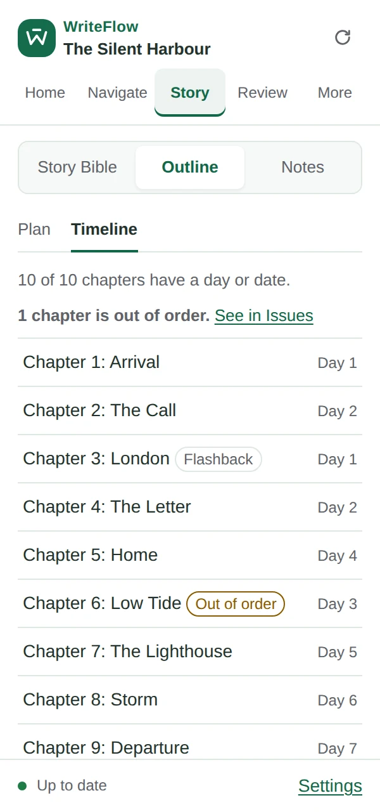
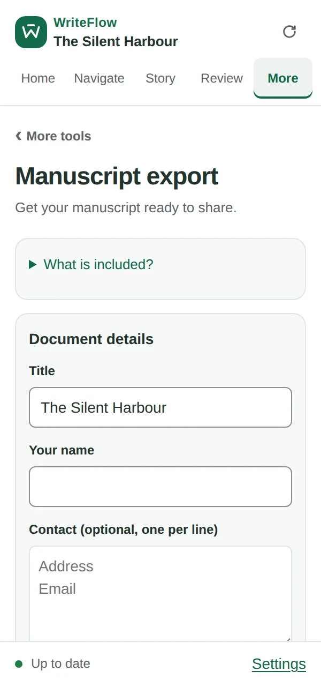
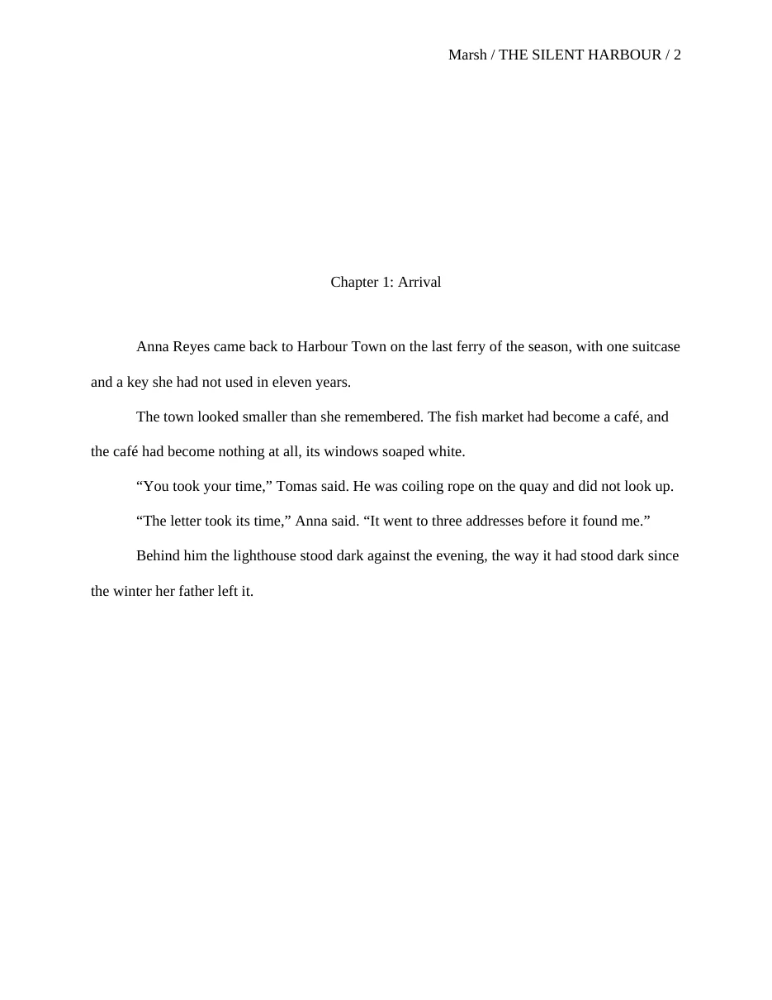

Finish your novel in Google Docs.
A writing sidebar for long manuscripts: chapters, a Story Bible, revision passes and a submission-ready export, right beside your draft.
Every Pro feature free for 30 days. No card needed. Then keep the Free plan, or go Pro from $79 a year.

Pick up exactly where you stopped.
Open the sidebar and Continue writing takes you to your last sentence, even in a 100,000-word document.
- Daily and deadline goals with honest pacing
- Writing sprints that count your words
- Search the whole book without your document jumping around


One chapter, one check at a time.
Revision passes walk you through what deserves a second look, chapter by chapter. Dismiss it, keep it, or fix it: WriteFlow never changes your text for you.
- Close repetitions, placeholders like TK, untagged dialogue
- Timeline order, tense and point of view
- Insights compared with your own writing, not with rules


Keep your story straight.
Write your Story Bible in a tab of the same document. WriteFlow finds every mention, shows who appears where, and lays your chapters out in story order.
- Characters, places, objects and world rules
- Timeline with flashbacks and out-of-order warnings
- Beat sheets laid over your chapters


Send it out in standard manuscript format.
One click makes a Word file or a print page with a title page, chapter breaks and a running header, italics kept. Your Google Doc stays exactly as it is.
- A readiness checklist before you submit
- Snapshots to compare drafts chapter by chapter
- Backups and exports you own


Built for the long haul of a book.
Night Reader
Re-read in a calm, dark, large-type window, the way a reader will meet your book.
Lifeboat
If your connection drops, keep reading and writing in the sidebar, then paste your words back.
Notes and story questions
Capture a thought without losing your place. Each note is tied to where your cursor was.
Outline
Plan chapters with status, POV and synopsis, built from your headings in one click.
Go to anything
Type a chapter, a character or a command. Every tool is a few keystrokes away.
Yours to keep
Back up your project, export text or Markdown, or make an Obsidian vault with linked notes.
Private by design.
WriteFlow reads your document to help you with it, and that’s all. It’s built so that it can’t do more.
- It opens only the document you start it in, nothing else in your Drive.
- It never changes your text. It can only move your cursor.
- Your writing isn’t sent to us, to advertisers, or to any AI.
- Notes and history stay in your browser; settings in your own Google account, invisible to collaborators.
- Error reports never include your words.
Free to write. Pro to finish.
Install free and get every Pro feature for 30 days, no card needed. Afterwards the Free plan keeps working, and your notes, outline and history are always yours.
Free
Forever, after your 30-day Pro trial
- Word counts, goals and sprints
- Chapters, Go to and whole-book search
- Story Bible with every mention
- Notes, story questions and outline
- Night Reader and Lifeboat
- Backups and text exports
Pro
or $9.99 a month. Cancel any time.
- Everything in Free
- Revision passes and one Issues list
- Continuity, timeline, tense and POV checks
- Full Insights and pacing
- Manuscript export (Word or print)
- Snapshots, structure beats and more
Questions
Does it use AI?
No. Every feature is counting and pattern-finding that runs in your browser. If we ever offer optional AI review, it will stay off unless you switch it on yourself.
Can it change or delete my writing?
No. Google’s permission screen says “view and manage” because add-ons have no read-only option, but WriteFlow never edits text. It reads your document and can move your cursor.
Will it slow down Google Docs?
It’s built not to. The analysis happens in the sidebar, separately from the editor, and it checks for changes every few seconds rather than on every keystroke.
What happens after the 30-day trial?
You move to the Free plan automatically. Nothing is deleted: your notes, outline and history stay, and Pro tools are simply paused until you subscribe.
Does it work with tabs, or a book split across documents?
Tabs, yes, fully. A book split across several documents is planned.
What languages does it support?
Counts, chapters, search and the Story Bible work in any language. Passive voice, adverbs, tense and reading ease are English-only and hide themselves for other languages.
Does it work on my phone or tablet?
Google Docs add-ons run in a desktop browser (Chrome, Edge, Firefox or Safari on a computer), not in the Google Docs phone apps.
I joined the beta. What about me?
Thank you. Beta testers get Pro free for life: we’ll email you a license key before launch.
Your book is already in Google Docs.
Give it the tools to get finished. Free for 30 days, no card needed.
Install WriteFlow free